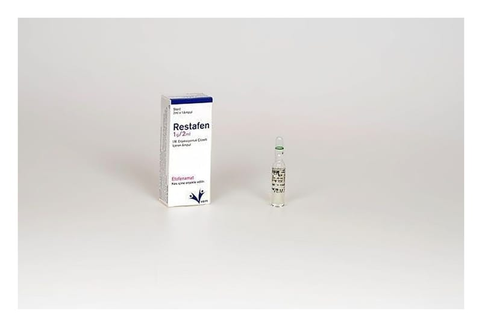

Restafen %5 Jel, 40 g

Ne için kullanılır
KT · Bölüm 1RESTAFEN, 40 g açık şeffaf jel içeren tüplerde ve karton kutu içerisinde kullanıma sunulmaktadır. RESTAFEN, etkin madde olarak etofenamat içerir. Etofenamat, steroid olmayan (kortizonsuz) anti-romatik (romatizma tedavisi) ilaçlar grubundandır ve yangı önleyici (antiinflamatuvar) ve ağrı kesici (analjezik) özelliklere sahiptir.
RESTAFEN, aşağıdaki durumların tedavisinde kullanılır:
e Spor yaralanmaları gibi künt travmalardan sonra el ve ayaklardaki akut ezilme, burkulma ve zorlanmalara bağlı ağrılı durumlar.
e Diz eklemi kireçlenmesinde (diz artrozu), eklem çevresi yumuşak dokulardaki (bursa, tendon, bağlar ve eklem kapsülü) ağrılı durumlar.
RESTAFEN'i doktorunuza danışmadan 3 günden daha fazla süreyle kullanmayınız.